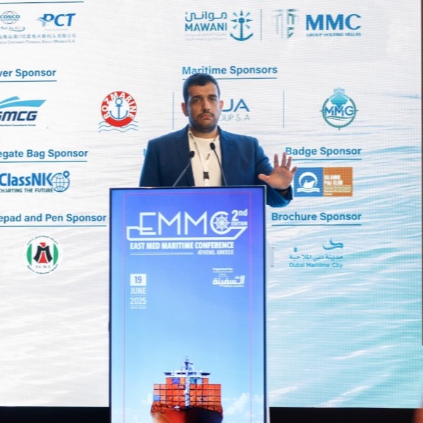

Pioneering BWTS Excellence & Marine Engineering
Dedicated to vessel compliance, environmental preservation, and operational efficiency across the global maritime industry.
Engineered for Maritime Excellence.
Protecting Marine Ecosystems Through Advanced Engineering
Mozuk Marine stands at the forefront of maritime environmental technology. With years of practical field experience and in-depth understanding of marine engineering, we serve shipowners, vessel operators, and shipyards worldwide.
We specialize in turnkey retrofits, emergency repairs, commissioning, routine calibration, and genuine spare parts for UV, Electro-chlorination, and Chemical Ballast Water Treatment Systems (BWTS).

The Vision Behind Mozuk Marine
Michel Akl
Driven by a passion for maritime engineering and marine environmental protection, Michel Akl founded Mozuk Marine to deliver specialized, high-reliability Ballast Water Treatment System (BWTS) engineering, retrofits, and global technical support.
With extensive hands-on experience across major BWTS technologies, Michel established an agile, field-ready team of qualified marine engineers. Under his leadership, Mozuk Marine has grown into a trusted partner for shipowners, vessel managers, and drydocks worldwide, ensuring seamless compliance with IMO D-2 and USCG regulations.
Recognizing firsthand how fragmented paper archives and heavy manuals delay urgent onboard repairs, Michel expanded Mozuk Marine's solutions to include complete Technical Document Digitalization. By transforming paper P&IDs, wiring schematics, and maker manuals into a searchable digital repository accessible on workstations and tablets, he empowered ship crews with instant field access—eliminating paper chaos and making daily life infinitely easier for marine engineers.
Our Core Engineering Pillars
We deliver uncompromised quality and technical expertise tailored to the rigorous demands of modern shipping.
Global Dispatch Readiness
Our qualified marine engineers and field technicians are available 24/7 for worldwide dispatch directly to ports, anchorage, or drydocks.
Multi-Brand Proficiency
Deep technical expertise across top global BWTS manufacturers including Alfa Laval, Desmi, Wärtsilä, Techcross, ERMA FIRST, and Bio-Sea.
Regulatory Compliance
Ensuring full adherence to IMO D-2 biological discharge standards and USCG regulations to safeguard your fleet from port state penalties.
Genuine Spare Parts
Direct access to OEM and high-grade replacement components including UV lamps, quartz sleeves, sensors, valves, and electrolytic cells.
Ready to Ensure Full Vessel Compliance?
Contact our team of marine engineering specialists today for technical consultations, maintenance quotes, or emergency dispatch.
Request a Quote